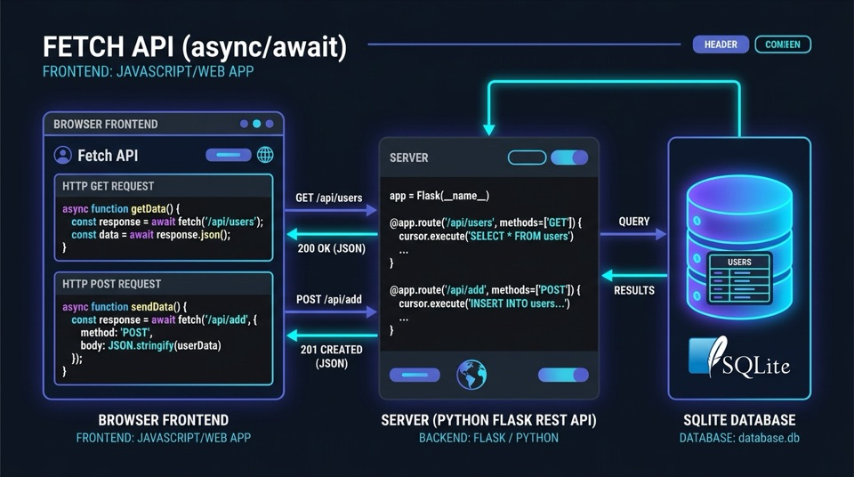

Do LocalStorage ao Backend RESTful Real
Aula dividida em duas etapas didáticas: a Parte 1 (Fundamentos & Mini-Exemplos) com a Fetch API e microbackend em Python Flask; e a Parte 2 (Tarefa Guiada) com a refatoração da Vitrine Comercial de Serviços com banco relacional SQLite e contingência offline.

A Grande Virada: De Aplicação Isolada para a Nuvem
Por que o LocalStorage não basta para sistemas comerciais de médio e grande porte?
No Roteiro 04, os dados de serviços eram gravados exclusivamente no localStorage do navegador da máquina em que o usuário estava trabalhando.
- Dados presos: Se o estudante cadastrar no computador do lab, o colega ao lado não enxerga.
- Risco de perda: Limpar cache ou abrir aba anônima apaga todos os registros.
- Inviável comercialmente: Um cliente em Garopaba não consegue comprar se o catálogo vive no celular do lojista.
No Roteiro 05, os dados saem do cliente e passam a residir em um Servidor Central com Banco de Dados Relacional acessível por toda a rede.
- Compartilhamento instantâneo: Qualquer pessoa na rede visualiza os novos cadastros.
- Persistência robusta: SQLite guarda os registros em arquivo com integridade relacional.
- Arquitetura Real: Separação limpa entre a interface (Frontend) e as regras de negócio (Backend).
Topologia da Aplicação: 3 Camadas Integradas
Como as portas, protocolos e serviços conversam durante o ciclo de vida de uma requisição.
Frontend Web
Bootstrap 5 + ES6 Modules
Porta 5500 (Live Server)Backend RESTful
Python Flask + flask-cors
Porta 5000 (HTTP API)Banco Relacional
SQLite 3 em Arquivo
vitrine.db (Local)O navegador dispara fetch('http://127.0.0.1:5000/api/servicos') em background sem bloquear o usuário.
A rota @app.route processa os verbos HTTP, confere o CORS e executa a query relacional no SQLite.
O backend retorna o código de status HTTP correspondente acompanhado da carga útil codificada em JSON.
Os 4 Verbos REST Essenciais & Seus Status
Cada ação sobre o catálogo de serviços utiliza um método HTTP semântico padronizado.
Consulta / Leitura
Lê os serviços da comunidade. Não altera o banco. Seguro e idempotente.
Criação / Cadastro
Envia novo serviço no corpo (body). O servidor gera ID automático no SQLite.
Atualização / Edição
Atualiza dados de serviço existente pelo seu ID (/api/servicos/3).
Exclusão / Remoção
Remove o registro correspondente da tabela com confirmação no cliente.
Por que o Navegador Bloqueia? O Papel do CORS
A Política de Mesma Origem (SOP) e como o Flask autoriza a comunicação entre portas.
Uma Origem é definida por Protocolo + Domínio + Porta:
Como as portas são diferentes, o navegador bloqueia a leitura por segurança, gerando o temido erro vermelho: "Access to fetch has been blocked by CORS policy".
O servidor envia no cabeçalho de resposta uma autorização expressa:
from flask import Flask
from flask_cors import CORS
app = Flask(__name__)
# Adiciona o cabeçalho: Access-Control-Allow-Origin: *
CORS(app)Com apenas 2 linhas em Python, o microbackend autoriza qualquer aplicação autorizada a consumir as rotas RESTful!
Pílula 1: O fetch() Mínimo (GET com async/await)
Como carregar dados estruturados em JSON no cliente sem recarregar a página (pasta mini-exemplos/01-fetch-get/).
// 1. Função assíncrona nomeada (desacoplada da interface)
async function carregarServicos(lista) {
try {
// Dispara requisição HTTP com await
const resposta = await fetch('dados.json');
// Converte o texto JSON em vetor de objetos
const servicos = await resposta.json();
// Limpa e preenche o DOM usando laço for..of
lista.innerHTML = '';
for (const servico of servicos) {
const item = document.createElement('li');
item.className = 'list-group-item';
item.textContent = `${servico.nome} - R$ ${servico.preco.toFixed(2)}`;
lista.appendChild(item);
}
} catch (erro) {
console.error('Falha ao carregar:', erro);
}
}
// 2. Controle seguro do ciclo de vida do DOM
document.addEventListener('DOMContentLoaded', () => {
const btnCarregar = document.getElementById('btnCarregar');
const lista = document.getElementById('listaServicos');
btnCarregar.addEventListener('click', () => carregarServicos(lista));
});
Com o script em functions.js, usamos <script src="functions.js" defer> no HTML e amarramos os nós dentro de DOMContentLoaded. Isso evita o clássico erro de nós nulos (null) e mantém o desacoplamento de responsabilidades.
Os estudantes abrem a pasta 01-fetch-get no VS Code com Live Server, clicam no botão e veem os dados de Garopaba surgirem no DOM instantaneamente.
O Microframework Flask: O que é, Como Funciona e Instalação
Arquitetura minimalista em Python para construção de APIs RESTful e integração com o Front-End.
Criado no ecossistema Python (Pallets), o Flask é um microframework web com núcleo enxuto. Diferente do Django (framework monolítico "baterias inclusas"), o Flask não impõe ORMs ou estruturas engessadas.
- Entrega o essencial: roteamento HTTP (Werkzeug) e templates (Jinja2).
- Liberdade total para estruturar pastas e acoplar bibliotecas sob demanda.
Opera no padrão WSGI com rotas declaradas via decoradores: @app.route('/api/...', methods=['GET']) e respostas em JSON com jsonify().
No terminal integrado do VS Code, verifique a versão do Flask:
$ python3 -m flask --version # macOS
Retorno esperado: versões do Flask 3.x.x, Python 3.x.x e Werkzeug 3.x.x.
Caso não esteja instalado, instale via pip:
Atenção: O pacote flask-cors é obrigatório para que o navegador (Live Server na 5500) não bloqueie requisições para a API na porta 5000!
Do XAMPP (PHP & Apache) ao Flask: O que Mudou?
Comparando a pilha clássica dos laboratórios de banco de dados com a arquitetura desacoplada moderna.
O modelo comum em disciplinas introdutórias de banco de dados e programação de servidores:
- Servidor Pesado: Exige instalar Apache e MySQL como serviços de sistema (portas 80/443 e 3306).
- Roteamento Físico: A URL espelha o disco rígido (
localhost/app/produtos.php). - Monólito SSR: O PHP mescla HTML e lógica (
echo '<tr>...'), recarregando a página inteira a cada requisição. - Banco via Rede: Exige MySQL em background e painel visual do phpMyAdmin.
O padrão moderno da indústria para aplicações ricas (SPAs) e microsserviços:
- Servidor Embutido: Sobe em 1 segundo direto do script Python (
app.run()), sem instalar nada no SO. - Rotas Semânticas: Mapeadas no código via decoradores (
@app.route('/api/produtos')). - API Desacoplada: O backend devolve apenas dados JSON puros (
jsonify()); o JS atualiza o DOM sem piscar a tela. - SQLite Portátil: Banco relacional em 1 arquivo (
vitrine.db) nativo do Python, zero configuração de portas ou senhas.
Navegador (SPA)
Porta 5500 (Live Server)Flask API (WSGI)
@app.route + jsonify()SQLite 3
vitrine.db (Arquivo Local)Pílula 2: O Microservidor Flask em 15 Linhas
Construindo uma API real em Python e comprovando a liberação de CORS no navegador (pasta mini-exemplos/02-micro-flask-cors/).
from flask import Flask, jsonify
from flask_cors import CORS
app = Flask(__name__)
CORS(app) # Libera o acesso entre as portas 5500 e 5000
@app.route('/api/status', methods=['GET'])
def obter_status():
return jsonify({
"status": "online",
"servidor": "Micro API Flask",
"cidade": "Garopaba - SC"
})
if __name__ == '__main__':
app.run(port=5000, debug=True)No terminal integrado do VS Code:
Peça para os alunos comentarem # CORS(app). Eles clicarão no botão e verão o erro de CORS vermelho no DevTools (F12). Ao descomentar, a mensagem verde aparece imediatamente!
Pílula 3: Enviando Dados Estruturados (POST)
Os 3 mandamentos do envio de dados com a Fetch API e recepção no backend (pasta mini-exemplos/03-fetch-post/).
async function cadastrarNovoServico(evento) {
evento.preventDefault();
const dadosFormulario = {
nome: campoNome.value,
preco: parseFloat(campoPreco.value)
};
try {
const resposta = await fetch('http://127.0.0.1:5000/api/cadastrar', {
method: 'POST',
headers: { 'Content-Type': 'application/json' },
body: JSON.stringify(dadosFormulario)
});
// Condicional explícita sem contração
if (resposta.ok === false) {
throw new Error(`Status ${resposta.status}`);
}
const resultado = await resposta.json();
exibirAlertaSucesso(resultado.mensagem);
} catch (erro) {
exibirAlertaErro(erro.message);
}
}
formCadastro.addEventListener('submit', cadastrarNovoServico);@app.route('/api/cadastrar', methods=['POST'])
def cadastrar_servico():
# Captura e decodifica o payload JSON
dados = request.get_json()
if not dados or 'nome' not in dados:
return jsonify({"erro": "Invalido"}), 400
novo_registro = {
"id": len(banco) + 1,
"nome": dados['nome'],
"preco": dados['preco']
}
banco.append(novo_registro)
return jsonify({
"mensagem": "Cadastrado!",
"registro": novo_registro
}), 201Pílula 4: Resiliência de Rede & Feedback com Spinner
Como tratar erros defensivamente com o bloco finally (pasta mini-exemplos/04-fetch-spinner/).
async function testarConexaoComServidor() {
// 1. Ativa feedback visual no início
ativarEstadoCarregando();
try {
const resposta = await fetch('http://127.0.0.1:5000/api/status');
// Desvio condicional sem contração
if (resposta.ok === false) {
throw new Error(`Status ${resposta.status}`);
}
const dados = await resposta.json();
exibirAlertaSucesso(dados);
} catch (erro) {
// 2. Falhas de rede ou servidor desligado
exibirAlertaErro(erro.message);
} finally {
// 3. SEMPRE executado: desliga o spinner!
desativarEstadoCarregando();
}
}
btnTestar.addEventListener('click', testarConexaoComServidor);
Sem o bloco finally, se ocorresse um erro inesperado no bloco try, o spinner ficaria girando na tela eternamente. O finally garante que a interface sempre retorne ao estado operacional!
Parabéns! Você concluiu todos os mini-exemplos da Parte 1. No próximo slide avançamos para a Parte 2: Tarefa de Implementação Guiada (Vitrine de Serviços)!
SQLite 3 em Arquivo: Sem Servidores Externos
Fase 1/6: O banco relacional que sustentará a Vitrine de Serviços em um único arquivo vitrine.db.
servicosid INTEGER PRIMARY KEY AUTOINCREMENT,
nome TEXT NOT NULL,
categoria TEXT NOT NULL,
bairro TEXT NOT NULL,
precoBase REAL NOT NULL,
telefone TEXT NOT NULL,
descricao TEXT,
dataCadastro TEXT
);
O SQLite cria automaticamente o arquivo vitrine.db na primeira execução caso ele ainda não exista!
Consulte o arquivo roteiro-5/tarefa-guiada.pdf para seguir o roteiro detalhado das Fases 1 a 6 da refatoração da Vitrine Comercial de Serviços.
- Zero instalação: O módulo
sqlite3já vem embutido nativamente no Python! - Portabilidade total: Basta copiar a pasta do projeto e o banco vai junto.
- Conformidade ACID: Transações atômicas seguras com
commit()erollback().
Vitrine Completa & O Padrão Fallback Resiliente
Fases 2 e 3: Como garantir que a aplicação continue funcionando perfeitamente mesmo sem a API ativa.
Na camada js/services/vitrineService.js, implementamos o padrão profissional de Contingência Automática:
try {
// 1. Tenta comunicar com a API Flask
const dados = await buscarNaApi();
atualizarBadgeConexao('online-flask');
return dados;
} catch (erro) {
// 2. Falhou? Recorre ao LocalStorage!
console.warn('API offline. Ativando fallback...');
atualizarBadgeConexao('offline-storage');
return buscarNoLocalStorage();
}
O GitHub Pages só hospeda arquivos estáticos. Graças ao Fallback, quando o aluno subir o projeto para o portfólio no GitHub Pages, a vitrine funcionará 100% via localStorage sem erros na tela!
O cabeçalho da Vitrine exibe uma pílula dinâmica informando o modo de operação:
Conectado à API Flask
Modo Offline (LocalStorage)
Roteiro de Voo da Aula: Parte 1 & Parte 2
Marque cada etapa à medida que você implementar no laboratório.
fetch() GET com functions.js e dados.json.venv, instalar flask-cors e entender Flask vs XAMPP./api/status e liberação de CORS.POST (JSON).try...catch...finally.vitrine.db).vitrineService.js com Fetch e Fallback offline.POST.